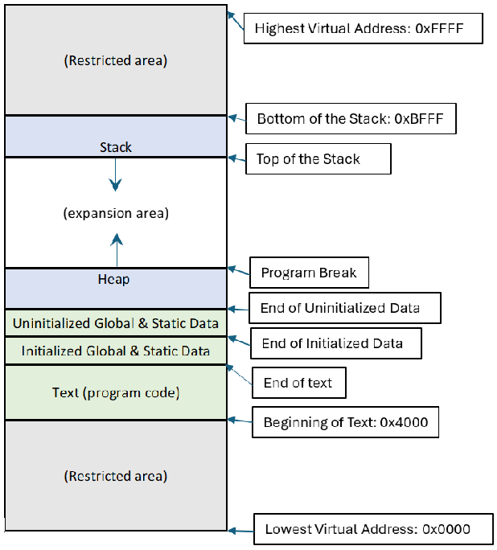
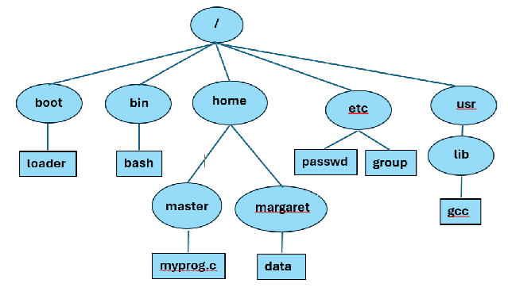

Module 4: Processes
What is a Process?
A process is an instance of a program that is running on a computer, also called a running program. To write a program, we are probably using a text editor (like vim) that creates a file with the instructions in some predefined computer language (like C). The instructions in this file are later translated to instructions in machine language by a compiler (like gcc). A successful compilation generates another file containing the translated instructions. To run this compiled file in the computer, the operating system must load its instructions in the computer’s memory and make them ready to take control of the computer. It is only then that we can consider it to be a process, and it will remain a process until the operating system terminates it.
Notice that we are using other programs and processes to generate our program. The text editor and the compiler are collections of many files with instructions that help us write code and create executable files, respectively. To perform these activities, the files of these programs need to run on the computer. When they are running, they also become processes. Any program running on a computer is a process.
The operating system has at its core a set of instructions known as the :term;`kernel`. The kernel is the actual manager of the computer and handles all its operations. Among other things, it decides everything about the processes: when can they run, how to run and for how long. It also allocates resources for these processes: CPU to run, memory, files and peripherals. The kernel itself is not a process.
While working, the operating system is constantly switching between two modes of operation, the kernel mode and the user mode. In kernel mode, the kernel is in control of all operations. It can perform any activity in the computer without any restriction. When there are processes to run, the kernel selects one of them, loads it in memory, assigns resources to it and switches to user mode, to let the process take control of the computer, but in a restricted fashion. The process can only perform activities over the resources that it has control. If the process were to require more resources, like more memory, or access to a device, or even terminate, it must request the kernel for these actions to be performed. When it does, the kernel regains control of the computer in kernel mode and decides to grant or not these resources, to let the process continue in user mode again, or to grant access to the CPU to another process in user mode again.
Processes and the File System
When a process starts, it is assigned a current working directory that is inherited from its parent process, unless it is a shell process which gets its assignment from the home directory of the user who creates the shell. The home directory is part of the information stored for every user in the password file for the system. Processes use their current working directory to discover the location of files within the file hierarchy.
There are two ways to indicate the placement of files in the file system. The absolute pathname describes the position of a file starting at the root. For example, in the figure above, the absolute pathname for the file myprog.c is /home/master/myprog.c . Notice that an absolute pathname always begins with the slash (/) for the root directory. That is its give away. In an absolute pathname we write the name of every directory in the path from root to the required file, each name separated by slashes. The other way to indicate file placement is with the relative pathname, and this is where the current working directory is needed. A relative pathname for a process is based on its current working directory. For example, if the user named master opens a shell, and its home directory is /home/master, then this will also be its current working directory. Now, under these circumstances, all that the shell needs to do to refer to the file myprog.c is to name it, because it is already placed in its current working directory. There is no need to add any directory name.If on the other hand, the shell wants to refer to the file named data under the margaret directory, it will have to indicate the path to this file from the current working directory. This will go something like this: ../margaret/data . Notice this time that the relative pathname does not begin with the slash for the root directory, instead it begins with the dot-dot (..), indicating that from the master directory (the current working directory), the search must go up to its parent directory (home), and from there it should go down to the directory named margaret to find the file data.
While in the shell, the user may change its current working directory with the command cd. This command takes a pathname as a parameter (absolute or relative) which becomes the new current working directory. Used without parameters, cd moves the current working directory backs to the home directory. If a C program wants to retrieve the current working directory, it may use the getcwd system call that returns it as string (char *). The parameters for this function call are a string with enough space to receive the pathname and the size of this string. If that string is not long enough, the function call will fail. To change this current working directory, the C program may use the chdir system call that takes the new pathname as a parameter and returns the integer 0 for success or -1 in error. The prototypes for both system calls are as follows:
char * getcwd (char *cwdbuf, size_t size )
int chdir ( const char *pathname )
To access a file, it is not enough to know the placement of a file in a file system, we must also be aware of the file permissions granted to the file. File permissions are divided in three groups: permissions for the owner of a file, permissions for the group to which the file belongs, and permissions for anyone else. Each one of these groups may have the following permissions: permission to read the file, permission to write on the file and permission to execute the file (used if the file is a compiled program or a script). The same permissions are granted for directories, but with slight different meanings. Reading a directory means to be able to see its contents, writing in a directory means to be able to modify its contents, but the execution permission is actually a search permission. It allows for the search of a particular entity inside the directory.
We can observe the permissions on every file or directory if we use the command ls -la. The following figure shows samples of this command applied to the directories master and margaret in the file system depicted before, by user named master:
master $ls -la
drwx------ 21 master master 4096 Jun 5 22:14 .
drwx-xr--x 3 root root 20 Apr 2 16:40 ..
-rw-r--r– 1 master master 1167 Jul 26 12:36 myprog.c
master $ls -la ../margaret
drwx------ 3 margaret margaret 4096 May 6 11:10 .
drwx-xr--x 3 root root 20 Apr 2 16:40 ..
-rw-r--r– 1 margaret margaret 10423 Jun 6 17:14 data
master $
The results presented by this command show the permissions on the left
side. The first character indicates that kind of file being observed
(- for a regular file, d for a directory). This is followed by
three sets of three characters, for user, group and other users. For
each of these sets there is a character for the read permission (r),
the write permission (w) or the execute/search permission(x). If
any of these permissions is not granted, then a dash (-) is being
displayed instead. For example, the myprog.c and data files both
allow read and write permissions for the owners (master and
margaret, respectively) , and read only permissions for their group
and everyone else.
After the permissions, the results of the command also show the number
of links the file has, the owner of the file, the group to which it
belongs, the size in bytes, the last date and time that was modified and
the file name and extension. With the permissions above, if the master
user wants to read the data file in the margaret directory, it may do so
because read permissions have been granted to everyone. However, if it
tries to modify it, it cannot, because it is neither the owner, and it
does not belong to the same group as the file, and the permissions for
everyone do not include the write permission.
Owners and privileged users may change the permissions of a file with the chmod shell command. The most basic structure of this command is as follows:
chmod [OPTION]... MODE FILE...
This command will change the permissions of the files mentioned in the
files parameter as indicated by the mode. There are two ways to indicate
the mode, explicitly and implicitly. The explicit mode mentions the
users affected (u for user, g for group, o for other, or
a for all) followed by an operation symbol (+ to add, - to
remove, or = to set and remove unspecified) followed by the
previously mentioned symbols for the permissions (r to read, w
to write, and x to execute/search). For example if the margaret
user is going to allow everyone to read and write in her data file, not
just the owner, it may use any of the following alternatives:
chmod g+w,o+w data
chmod g=rw,o=rw data
chmod =rw data
The implicit mode can only be used to assign all permissions at once. It assigns values to the various permissions: 4 to read, 2 to write and 1 to executer/search. Each one of these values is used at face value if we are given permissions to other users, but they are multiplied by 10 if we are giving permissions to the group, or by 100 if the permissions are granted to the owner. All these values must be added and the final number is used as the mode. For example if the margaret user is going to grant read and write permissions to everyone we need to add 4+2 for everyone with 40+20 for the group and 400+200 for the owner, giving a total of 666 that can be used as the mode.
When creating a file (with the open system call) or a directory
(with mkdir) we can specify their permissions with a parameter,
however, these permissions are modified by the process’s file mode
creation mask, also known as the umask. Every process inherits a
umask from its parent process. This contains a set of permissions that
will be eliminated in every file the process creates. A typical umask
contains the value 022, representing the write permission for group and
other users. This eliminates this permissions from all new files and
directories the process creates.
Process Identification
Processes can be recognized by their Process Identification Number,
commonly known as the PID. This is a unique positive integer number
that is assigned to the process by the kernel. The system call
getpid in C returns the PID associated with the calling process.
Every process is also a child of another process. For example, when a
user requests to run a program from a shell, the process generated by
that program becomes a child of the shell. A process may obtain the PID
of its parent process from the system call getppid.
For greater control, related processes belong to a group with a group id. Usually, a process inherits its group and group id from its parent process. However, the parent process may decide to assign a different group to its children. This is what usually happens with commands in shells. For example, if a shell creates a pipe of commands, like ls | sort, two processes are created, one for the ls command and another for the sort command, both with different PIDs. Because these processes are related by working in tandem, the shell makes them both part of a new group and designates the first process (ls) as the group leader. Its own PID also becomes the group id.
In a process, a system call getpgrp is used to obtain its own
group id. To identify the group id for any other process, one may use
the system call getpgid(pid), where the pid parameter
contains the PID of the requested process.
A session is a set of process groups, all of which are assigned to
the same session ID. The session ID is the PID of the process that
created the session, known as the session leader. For example, when a
shell starts running, it creates a session made out of a single group
with a single process, the shell itself. This shell process is the
session leader. Every command that runs later on the shell will belong
to a group that may be different from the shell group, but they all
inherit the same session ID, the session ID of the session leader. The
system call getsid(pid) returns the session id of a process with the
parameter pid. When this system call is given a pid of zero, it
returns the session id of the calling process.
The following program demonstrates this concept,
#include <stdio.h>
#include <unistd.h>
#include <stdlib.h>
int
main(int argc, char *argv[])
{
pid_t pid = getpid();
pid_t ppid = getppid();
pid_t pgrp = getpgrp();
pid_t pgid = getpgid(ppid);
pid_t sid = getsid(0);
pid_t psid = getsid(ppid);
printf("%-30s %d\n", "My Process ID: ", pid);
printf("%-30s %d\n", "My Group ID:", pgrp);
printf("%-30s %d\n", "My Parent Process ID:", ppid);
printf("%-30s %d\n", "My Parent Group ID:", pgid);
printf("%-30s %d\n", "My Session ID:", sid);
printf("%-30s %d\n", "My Parent Session ID:", psid);
printf("\nOutput of `ps':\n\n");
fflush(stdout);
system("ps --forest -o pid,pgrp,ppid,pgid,sid,cmd");
return 0;
}
My Process ID: 66673
My Group ID: 66673
My Parent Process ID: 56072
My Parent Group ID: 56072
My Session ID: 56072
My Parent Session ID: 56072
Output of `ps':
PID PGRP PPID PGID SID CMD
56072 56072 56058 56072 56072 /bin/bash --posix
66673 66673 56072 66673 56072 \_ ./id
66674 66673 66673 66673 56072 \_ ps --forest -o pid,pgrp,ppid,pgid,sid,cmd
The output above also shows how the command ps can be used to display the ID of processes currently running by the shell. Notice that the process called id is made asleep in the background so the ps command can find it and display it. To view all processes in the system the ps -A command can be used.
A session also has a controlling terminal that is determined when the session is created. The terminal is where user interaction happens, where the user may enter commands through the standard input and see results from the standard output (if not redirected). A session may have control of just one terminal and a terminal may be controlled just by one session leader. Every process in the session is associated to the terminal, but only one process group is considered to be on the foreground. This means that this process group is the only one that is able to read messages from the standard input, namely to receive commands from the terminal. All other groups belonging to the same session are considered to be on the background.
The system call setpgid(pid, pgid) is used to change the group id of
the process with the parameter pid to a value of pgid. This
system call has the following characteristics:
If
pidis zero, the change happens to the calling process.If
pgidis zero, the group id of the process with the parameterpidis changed topidand becomes that group leader.The parameter
pidmay only refer to the calling process itself or one of its children and it cannot be a session leader.The calling process, as well as both processes on the parameters (
pidandpgid) must belong to the same session.
Similarly, a session id for a process can also be changed with the
system call setsid. A process other than the session leader can
make this call that creates a separate session with a single group. The
PID of this calling process becomes the group id and session id of the
new group and the new session. However, this new session will have no
controlling terminal.
Every process is also running at the bequest of a user. All users are
assigned a user ID, or UID. A process may request the identity
of its user with the getuid system call.The user must have the
right to run the process either because it is the owner, or because it
belongs to a group with the right to run that process or because that
process is available for everyone to run.
On occasions, the owner of a program may grant its right to run it as a
process to another user which cannot. To do that, the program must set
its set-user-id and/or set-group-id bits. The following figure
shows how this can be done and the effect it causes in the program.
Notice in the figure how the privileges for identify are
changed
master $ls -l identify
-rwxr-xr-x. 1 master master 17824 Jun 14 21:46 identify
master $chmod u+s identify
master $chmod g+s identify
master $ls -l identify
-rwsr-sr-x. 1 master master 17824 Jun 14 21:46 identify
If a user other than master, its owner, may run identify as a
process, it will run as if it were the owner. To do that, the kernel
uses what is called the effective user ID, or EUID and its
associated effective group ID, or EGID instead of its own uid
and gid. A process may identify its EUID and EGID with the geteuid
and getegid system calls, respectively. To make multiple uses of
this program, the EUID and EGID are stored as set-user-ID, or
SUID, and the set-group-ID, or SGID.
We invite you to read more about credentials for process in the credentials page of the man pages.
The init Process
We mentioned that every process is a child of another process, for this to be possible, there must be a process that was the first. This process is known as the init process and it is created by the kernel when the operating system is at booting stage. This process is the first one to appear and it is the last one to go. It remains active from start-up to system shutdown. It cannot be destroyed, not even by a superuser, because it keeps control of other important processes that allow the correct running of the operating system. In particular it is in charge of taking care of “orphaned” processes as we will later see. Every process in the system is a descendant of init. The process ID for the init process is the number 1 and it has the highest privileges, as if it were run by the superuser.
Process Creation
When a program is to be run, the operating system allocates various portions of memory (RAM) to the process. They constitute the virtual memory address space for the process. The amount of memory to be assigned varies from machine to machine and from program to program, and it solely depends on what the operating system decides. For this discussion, let’s assume that a process is assigned 64Kb of memory. Its address space begins with memory at position zero (0x0000 in hexadecimal) and its last address is one position before 64Kb (address 0xFFFF). Certain portions at the beginning and at the end of this address space are reserved by the operating system for process management and to store kernel references that will be used by the process. For this reason, let’s also assume that this leaves us with a remaining address space for the process beginning at 16Kb (address 0x4000) and ending one position before 48Kb (address 0xBFFF).
The remaining address space is further divided in segments. Each segment is assigned a different function and contains specific information for the process. On this first segment, known as the text, the operating system loads all the instructions of the compiled file (the program code). These are followed by all global and static data that are initialized by the program, and after them all global and static data that is not initialized. In our example, the text will begin at 16Kb (address 0x4000) and will continue until all code and global and static data is placed. The actual addresses where the program code, the initialized data, and then uninitialized data end, are all stored in CPU registers to inform the running of the process.
A second segment, the stack, begins at the other end of the address space (address 0xBFFF in our example), and it actually grows backwards towards the beginning of the address space. The stack is used to keep track of the functions the process calls. A CPU register (labeled as %rsp) holds the value of the memory address at the end of the stack. This address is known as the top of the stack. Every time a function is called, a new stack frame is added after the top of the stack. The stack frame contains information relevant to the function call and includes values for the parameters passed to the function call as well as places for the values of all the variables that are local to the function. Once the stack frame is added, the top of the stack is updated to point to the end of this new frame. When the function finishes calculations, its return value is stored in a CPU register to be sent to the calling function, the memory allocated to the stack frame is released, and the top of the stack is moved back to point at the end of the previous function call.
The third and last assigned segment is the heap. This usually lies right after the memory assigned for the uninitialized data and grows in opposite direction to the stack. The heap provides memory for all variables that are dynamically allocated when the process runs. The end of the heap is known as the program break, and the kernel may change its location to make it grow or shrink, based on the need and requests from the process.
The following figure shows an example of the placement of these segments in the virtual memory address space for a process:
{kind=link}
It is important to realize that this diagram shows memory from the point of view of the process, and likely, it will not represent the actual memory arrangement of hardware that the kernel has at its disposal. For example, the kernel will not grant access to the physical address 0x0000 to any process. This is reserved for the operating system. Also, the process may assume that all its segments are placed continuously in memory, when in fact the kernel usually makes allocations in non-contiguous areas. However, the process does not need to worry about any misalignment, because a big part of the kernel’s job is to maintain the illusion of a unified memory space for every process.
Once these segments are allocated, the operating system makes some other initializations. Every process is associated with three standard files: standard input, standard output, and standard error. The standard input file is the place from where the process will get external input, usually the keyboard. The standard output is the place from where all textual output from the process will be written. This is generally the screen or terminal from where the process is launched. Finally, the standard error is the place where all errors encountered by the process while running are to be reported. Most of the time this is also the same screen or terminal used for standard output, but there are other options, like sending it to a file in disk. The operating system will treat each one of these standard files like any other file in the system and will set file descriptors for each one of them. If there is redirection of these files, the operating system will modify the appropriate file descriptor to point to the requested device or file.
Finally, the operating system must initialize a CPU register with the address of the first executable sentence from the program. This register is known as the Instruction Pointer or IP (also known as the program counter or PC).
As an example of how the kernel assign a program to various segments in the process’ memory space, consider the following C program that creates a small table of compound interest:
/* Program: compound.c
* Version: 1.0
* Author: Guillermo Tonsmann Ph.D. */
#include <err.h>
#include <stdio.h>
#include <stdlib.h>
char *username; /* Name of the User <Uninitialized data> */
char *title = "\tTable of Compounded Amounts"; /* Title to be Displayed
<Initialized Data> */
/** Evaluate compounded interest over a number of periods
* Arguments: <on Stack>
* array: Pointer to an array of p+1 floats to be filled with compounded
* amounts
* a : initial amount to be compounded.
* r : interest rate as a fraction
* p : number of periods to be compounded (== size_of_array-1)
*/
float
compound(float *array, float a, float r, int p)
{
*array = a; /* First position of array contains the initial amount to be
compounded */
/* Evaluating the compound interest at each period and placing it in the array
*/
for (int i = 1; i <= p; i++) {
*(array + i) = *(array + i - 1) * (1. + r);
}
return (*(array + p) - (*array)); /* <Value returned in a register> */
}
/* Display a table of compounded amounts
* Arguments: <on Stack>
* array: Pointer to an array of p+1 compounded amounts
* p : number of periods to be compounded (== size_of_array-1) */
void
display(float *array, float p)
{
printf("%s\n", title); /* <from Initialized Data> */
printf("\t\tCreated by: %s\n", username);
printf("%15s %15s\n", "Amount", " After Period"); /* Table headings */
/* Printing each line of the table */
for (int i = 0; i <= p; i++) {
printf("%15.2f %8d\n", *(array + i), i);
}
return; /* Nothing to return */
}
/** Gets data from argv, generates an array for compound values
* and ask to be populated and displayed */
int
main(int argc, char *argv[], char *environ[])
{
/* Static Variables */
static float amount; /* Initial amount to be compounded. No default.
<Uninitialized Data> */
static float rate = 0.01; /* Interest rate as a fraction. Default: 1% as 0.01
< Initialized Data> */
/* Local variables <on Stack> */
int periods = 5; /* Periods to be compounded. Default: 5 periods */
float *compound_array; /* Array of compounded amounts (to be created) */
float interest = 0.0; /* Accumulated interest over all periods */
username = getenv("USER"); /* Getting a variable from the Environment
Array <On Stack> */
if (!username) username = "(Unknown)";
/* Reading and validating parameters from argv <on Stack> */
switch (argc) {
case 4:
periods = atoi(argv[3]);
case 3:
rate = atof(argv[2]) / 100.0;
case 2:
amount = atof(argv[1]);
break;
default:
printf("Invalid number of parameters\n");
printf("Usage: %s compound amount rate periods\n", argv[0]);
exit(1);
}
/* Validating periods */
if (periods < 1) {
printf("Periods should be integer with value greater than 1 \n");
exit(1); /* program returns with errors */
}
/* Creation of a dynamic array for the list of compounded amounts <on Heap> */
compound_array = malloc(sizeof *compound_array * (periods + 1));
if (!compound_array) err(1, "malloc");
/* Call to evaluate compounded amounts. Total interest earned is returned. */
interest = compound(compound_array, amount, rate, periods);
/* Call to display a table of compounded amounts. */
display(compound_array, periods);
/* Additional information added to the table. */
printf("\tAccumulated Interests:%.2f\n", interest);
return 0; /* program returns successfully */
}
After compilation, the program can be executed with parameters 1000, 2, and 7, corresponding to an amount of $1000.00 to be compounded at 2% per period during 7 periods. This produces the outcome shown in Figure 5.3:
Table of Compounded Amounts
Created by: ryan
Amount After Period
1000.00 0
1020.00 1
1040.40 2
1061.21 3
1082.43 4
1104.08 5
1126.16 6
1148.69 7
Accumulated Interests:148.69
When the operating system receives the request to run the program for
compound interest, it will initially load the various segments as shown
in Figure 5.4. Notice that the values of global variable title and
the static variable rate are placed in the initialized data section
of the text segment, while some memory space is left for the global
variable username and the static variable amount that will be
filled with values when the program runs. The first stack frame to be
loaded on the stack segment contains information for the running of the
first function in any C program, main. The stack frame is filled in
the opposite direction than the text segment. At the top of the stack,
we found the value of argc, that is the number of arguments passed
by the shell to the program (4 in this case). This is followed in order
by the arguments from argv and the environment variables from
env, also received from the shell. Given that these values may have
different sizes, rather than placing them in that position, they are
actually located at the end of the stack frame, and only pointers to
their actual location are stored at the beginning of the stack. The
stack frame also includes memory to store the contents of the local
variables from the main function. The stack frame may contain some
additional memory assigned as padding; because they should be aligned at
specific word sizes (16 or 32 bytes depending on the architecture).
Since no dynamic allocation was performed at this stage, the heap may
not have any actual memory associated with it. Nevertheless, a program
break will be already set, probably at the end of the text segment.

When the program calls the display function, a new stack frame is added on top of the stack segment. This new frame contains memory to hold all its parameters, its local variables, and padding memory if required. Once again, the top of the stack is moved to the end of this stack frame. This function uses the file descriptor for the standard output to display the program’s results. When it finishes it does not return any value. The top of the stack is moved back to the end of the stack frame for the main function.

Process Lifecycle
Once a process is loaded in memory we say that the process is in a ready state. It is ready for its instructions to be run by the CPU. At any given time there could be many processes in ready state trying to access the CPU. All these processes constitute a ready queue from which the kernel decides which process to run next. If the kernel decides to run a process from this queue, it updates the CPU context. This is the set of CPU registers that contain pointers to the locations where the process segments for that process are loaded. These include the values for program break, base of the stack, bottom of the stack, and instruction pointer. The kernel updates the CPU context with the appropriate values for the process to be run. The kernel then switches to user mode and allows the process to take charge of the computer to perform its instructions. This is a second state of the process known as the running state. The process will remain in this stage until one of the following events happens:
The process completes all its instructions and requests the kernel to terminate it.
The process does not complete all its instructions, but it is terminated by the kernel due to an irrecoverable error while running.
The process does not complete all its instructions, but it is terminated by the kernel because a predetermined amount of time has passed, and the kernel wants to give access to the CPU to other processes in the ready queue.
The process requires some resource (memory, reading of a file, or access to a peripheral, for example), and it is making a request to the kernel for that resource.
In all these cases, the process stops operations and the kernel takes control in kernel mode. In cases 1 and 2, where the process will no longer be active, it is terminated by the kernel, and all the resources that were allocated to that process are released at the kernel’s disposal. In case 3, when the allotted time for running has expired, the kernel places the process back into the ready queue, to wait for a new time slot. In case 4, where the process requires a resource, if the kernel can satisfy that request quickly, it will grant it, and let the process resume operations again in user mode. If on the other hand, the process must wait for some resource in a queue, the kernel changes the state of the process to a waiting state until it can get hold of the resource. When this happens, the kernel moves the process back to the ready queue to wait for a new time slot, just like in case 3.
In both cases, 3 and 4, before the process changes state, all registers in the CPU context are stored. These stored registers will be used later to restore execution of the program when the process is sent back to the running state. Therefore, every time that the kernel changes the process to be running in the CPU, it saves CPU context of the old process and copies the recorded CPU context of the new one (if it exists) on the actual CPU registers. This activity is called context switching,
The figure below shows the flow of a process along its possible states:
{kind=link}
Process Termination
There are two ways in which a process is terminated. In the first one,
the process itself requests its termination to the kernel by calling the
system call _exit(status). The underscore is part of the name of
the system call, and the status is an integer value, usually between 0
and 128, known as the exit code. Processes that end successfully usually
return with an exit code of zero. The process may use a value different
than zero for the exit code to indicate some possible error that was
encountered while running. Users and processes expecting the conclusion
of that process may review this value to determine further actions.
Within a shell, the exit code of the latest terminated process is stored
in the environment variable $?. The second way in which a process
may be terminated is by using signals.
Signals
Signals are messages sent to processes to notify them of certain events. These could be sent between processes, but the most common signals are sent by the kernel. The kernel will send a signal to a process if there is a hardware issue, like an attempt to divide by zero, or to access a non-existent address in memory. The kernel will also send signals to let processes know of any condition that affects them, like the reading of a file being completed, or a terminal being closed; more importantly, if the allotted CPU time for a process has concluded and needs to be terminated or sent to a waiting state. The kernel may also notify the process with a signal if the user pressed specific combinations of keys, like ctrl-C or ctrl-\, that have a special meaning for processes as we will see below.
Signals are codified with integer numbers greater than 1. The kernel
uses the first 31 signals for specific well known messages. They are
known as the standard signals. Each of these standard signals has a
name that begins with the prefix SIG followed by three or four other
letters. All of these macros are defined in the signal.h header.
When an event generates a signal, it is delivered to the process, if the process is currently running in the CPU, it receives the signal the next time it returns from kernel mode–e.g. returning from a system call, generating a page fault, being scheduled to run, etc. In the time between the generation and the actual delivery of the signal we said that the signal is pending. Once the signal is delivered, it normally elicits a default action from the process. These default actions could be one of following five:
- Ignore
Ignore the signal.
- Terminate
Abnormal termination of the process
- Abort
Abnormal termination of the process with additional actions (core dump).
- Stop
Stop the process.
- Continue
Continue the process, if it is stopped; otherwise ignore the signal.
The list of which signal corresponds to which default action can be found in signal.h.
The listing below presents a program that simply busy-waits. We can use this program to review
the four signals above. When the
program runs in the foreground, we can terminate it by pressing either
ctrl-c or ctrl-\. In the first case the keystrokes makes the
terminal send a SIGINT signal. When the program receives it, the process
terminates. The second case is similar, but the signal sent is SIGQUIT,
and its default action is to terminate, but creating a core dump. We see the same process running, but this time we use the
ampersand (&) to send it to the background. To terminate this process,
we need to use the system call kill. Despite its name, the main
purpose of this system call is to send signals to processes. We can use
the shell utility kill
int main() { for (;;); }
$ ./run_forever
^C
$ ./run_forever
^\Quit (core dumped)
$ run_forever &
[1] 4823
$ ps
PID TTY TIME CMD
2605 pts/0 00:00:00 bash
4823 pts/0 00:00:03 run_forever
4828 pts/0 00:00:00 ps
$ kill -15 4823
[1]+ Terminated run_forever
$ ps
PID TTY TIME CMD
2605 pts/0 00:00:00 bash
4837 pts/0 00:00:00 ps
Notice that when a shell process has background processes, it assigns them a job control number or JobID. In the figure above, that number is 1 surrounded by square brackets [1]. Use that number to refer to this process. We can review all jobIDs with the bash command jobs. The fg and bg commands can be used to move jobs to/from foreground or background respectively. These jobs also receive signals with the kill command. The following output demonstrates run_forever.c run three times on the shell and being handled by the these various job control commands:
master $run_forever &
[1] 3300
master $run_forever &
[2] 3394
master $run_forever &
[3] 3417
master $ps
PID TTY TIME CMD
2647 pts/0 00:00:00 bash
3300 pts/0 00:00:04 run_forever
3394 pts/0 00:00:02 run_forever
3417 pts/0 00:00:01 run_forever
3399 pts/0 00:00:00 ps
master $run_forever &
[1] 3300
master $run_forever &
[2] 3394
master $run_forever &
[3] 3417
master $ps
PID TTY TIME CMD
2647 pts/0 00:00:00 bash
3300 pts/0 00:00:04 run_forever
3394 pts/0 00:00:02 run_forever
3417 pts/0 00:00:01 run_forever
3399 pts/0 00:00:00 ps
master $fg %2
run_forever
^Z
[2]+ Stopped run_forever
master $jobs
[1] Running run_forever &
[2]+ Stopped run_forever
[3]- Running run_forever &
master $bg %2
[2]+ run_forever &
master $jobs
[1] Running run_forever &
[2]- Running run_forever &
[3]+ Running run_forever &
SIGSTOP signalmaster $kill -STOP %3
[3]+ Stopped run_forever
master $jobs
[1] Running run_forever &
[2]- Running run_forever &
[3]+ Stopped run_forever
SIGSTOP signalmaster $kill -STOP %3
[3]+ Stopped run_forever
master $jobs
[1] Running run_forever &
[2]- Running run_forever &
[3]+ Stopped run_forever
SIGTERM signalmaster $kill -TERM %3
[3]+ Terminated run_forever
SIGINT signalmaster $kill -INT %2
[2]+ Interrupt run_forever
SIGKILL signalmaster $kill -KILL %1
[1]+ Killed run_forever
master $jobs
master $
In general, a process may decide not to take the default action
requested by a signal, instead it may allow for the signal to be
ignored, or it may decide to do something else when it receives it. A
process changing its default action under a signal is said to be
changing its signal disposition. This can be done if the process
invokes the signal system call from signal.h
that has the following prototype:
sighandler_t signal(int sig, void (*func)(int)))(int);
This prototype can be a bit confusing to read, made clearer by first defining a sighandler_t type,
typedef sighandler_t void (*)(int);
sighandler_t signal(int sig, sighandler_t handler);
The parameters for the signal system call are the signal number to
which the process wants to change its disposition and a pointer to a
handler function. The process must have access to the handler
function and the handler function must receive an integer and return
void. The handler function will contain the actions the process wants to
be executed when the signal arrives. A common use of the handler
function is to tidy up before the process is terminated, by returning
resources, like memory previously requested with malloc, or close files,
before calling the exit system call itself.
The following listing shows the program
signal.c that changes the signal disposition for the
SIGINT, SIGQUIT and SIGTERM signals using the signal system call to the handler function
named sig_handler that stores the signal number that was received. We will discuss the purpose of sigprocmask and the sigset_t variables in short order.
#define _POSIX_C_SOURCE 200809L
#include <err.h>
#include <errno.h>
#include <signal.h>
#include <stdbool.h>
#include <stdio.h>
#include <stdlib.h>
#include <string.h>
#include <unistd.h>
/* sig_atomic_t is an async-signal safe data type */
static sig_atomic_t volatile signo = 0;
/* Signal sets for blocking/unblocking signals. */
sigset_t sigset, oldsigset;
/** Record received signal handler */
static void
sig_handler(int sig)
{
int errno_sav = errno; /* Cache errno */
sigprocmask(SIG_BLOCK, &sigset, 0);
signo = sig;
signal(sig, sig_handler); /* Reinstall signal handler */
errno = errno_sav; /* Restore errno */
}
int
main(int argc, char *argv[])
{
/* Hold pending signals until their handlers are installed */
sigfillset(&sigset);
sigprocmask(SIG_BLOCK, &sigset, &oldsigset);
/* Install signal handlers SIGINT, SIGQUIT and SIGTERM */
signal(SIGINT, sig_handler);
signal(SIGQUIT, sig_handler);
signal(SIGTSTP, sig_handler);
int last_signo = signo;
for (;;) {
/* Unblock signals and sleep until a signal is caught */
sigsuspend(&oldsigset);
errno = 0;
printf("\tSignal Received: %d (\"%s\")\n", signo, strsignal(signo));
switch (signo) {
case SIGINT:
printf("I was, in fact, interrupted!\n");
break;
case SIGQUIT:
printf("Ok, time to exit!\n");
exit(0);
case SIGTSTP:
printf("Understood--powering down!");
fflush(stdout);
raise(SIGSTOP);
break;
}
last_signo = signo;
}
}
$ ./signal
^C Signal Received: 2 ("Interrupt")
I was, in fact, interrupted!
^Z Signal Received: 20 ("Stopped")
Understood--powering down!
[2]+ Stopped ./signal
$ fg
./signal
^\ Signal Received: 3 ("Quit")
Ok, time to exit!
$
Although by the description of the signal system call, it appears to be returning void, it is in fact returning a pointer to the previous disposition the signal had. This is handy when we want to preserve the previous handling conditions to be restored at a later point in time. The following listing demonstrates a program that alternates between the sig_handler handler function we previously saw, and the default handling for the SIGINT signal (ctrl-C). When the program invokes the signal system call to set the disposition to sig_handler for the SIGINT signal, it returns the default handling of this signal that is stored in a pointer named old_sig_handler, with the same signature as the sig_handler function. The old_sig_handler function is later restored with another call to signal. In the output, we see that while sig_handler is in use, the process cannot be terminated with ctrl-C, but this behavior stops when the old_sig_handler is in charge.
#define _POSIX_C_SOURCE 200809L
#include <err.h>
#include <errno.h>
#include <signal.h>
#include <stdbool.h>
#include <stdio.h>
#include <string.h>
#include <unistd.h>
/* sig_atomic_t is an async-signal safe data type */
static sig_atomic_t volatile signo = 0;
/* Signal sets for blocking/unblocking signals. */
sigset_t sigset, oldsigset;
/* Pointer to a signal handler function */
static void (*old_sig_handler)(int);
/** Record received signal handler */
static void
sig_handler(int sig)
{
int errno_sav = errno; /* Cache errno */
sigprocmask(SIG_BLOCK, &sigset, 0);
signo = sig;
signal(sig, old_sig_handler); /* Revert signal handler */
errno = errno_sav; /* Restore errno */
}
int
main(int argc, char *argv[])
{
/* Hold pending signals until their handlers are installed */
sigfillset(&sigset);
sigprocmask(SIG_BLOCK, &sigset, &oldsigset);
/* Install signal handler for SIGINT */
old_sig_handler = signal(SIGINT, sig_handler);
printf("signal handler for SIGINT is active\n");
fflush(stdout);
int last_signo = signo;
for (;;) {
/* Unblock signals and sleep until a signal is caught */
sigsuspend(&oldsigset);
printf("\tSignal Received: %d (\"%s\")\n", signo, strsignal(signo));
fflush(stdout);
}
}
$ ./swapping_handlers
signal handler for SIGINT is active
^C Signal Received: 2 ("Interrupt")
^C
$
A process may also block the delivery of a signal. This will do nothing to the signal, but it may allow the process to complete some activity that must be done uninterrupted by the disposition of the signal. To block a signal, the process keeps track of a blocked set, this a set of signals with data type sigset_t that collects the numbers of all signals to be blocked by the process. A signal will remain blocked until it is released, at which point is delivered.
The blocked set must be initialized as empty with the sigemptyset system call. To which we must add all the signals we wish to block, one by one, with the sigaddset system call. We will also need the sigprocmask system call to manage the blocked set. The prototypes for these system calls are:
int sigemptyset(sigset_t *set);
int sigaddset(sigset_t *set, int sig);
int sigprocmask(int how, sigset_t const *set, sigset_t *oldset);
The following listing shows a program that alternates between blocking and unblocking signals,
#include <errno.h>
#include <signal.h>
#include <stdbool.h>
#include <stdio.h>
#include <unistd.h>
char const *sig_names[] = {
[1] = "SIGHUP", [2] = "SIGINT", [3] = "SIGTSTP",
[4] = "SIGILL", [5] = "SIGTRAP", [6] = "SIGABRT",
[7] = "SIGBUS", [8] = "SIGFPE", [9] = "SIGKILL",
[10] = "SIGUSR1", [11] = "SIGSEGV", [12] = "SIGUSR2",
[13] = "SIGPIPE", [14] = "SIGALRM", [15] = "SIGTERM",
[16] = "SIGSTKFLT", [17] = "SIGCHLD", [18] = "SIGCONT",
[19] = "SIGSTOP", [20] = "SIGTSTP", [21] = "SIGTTIN",
[22] = "SIGTTOU", [23] = "SIGURG", [24] = "SIGXCPU",
[25] = "SIGXFSZ", [26] = "SIGVTALRM", [27] = "SIGPROF",
[28] = "SIGWINCH", [29] = "SIGIO", [30] = "SIGPWR",
[31] = "SIGSYS", [34] = "SIGRTMIN", [35] = "SIGRTMIN+1",
[36] = "SIGRTMIN+2", [37] = "SIGRTMIN+3", [38] = "SIGRTMIN+4",
[39] = "SIGRTMIN+5", [40] = "SIGRTMIN+6", [41] = "SIGRTMIN+7",
[42] = "SIGRTMIN+8", [43] = "SIGRTMIN+9", [44] = "SIGRTMIN+10",
[45] = "SIGRTMIN+11", [46] = "SIGRTMIN+12", [47] = "SIGRTMIN+13",
[48] = "SIGRTMIN+14", [49] = "SIGRTMIN+15", [50] = "SIGRTMAX-14",
[51] = "SIGRTMAX-13", [52] = "SIGRTMAX-12", [53] = "SIGRTMAX-11",
[54] = "SIGRTMAX-10", [55] = "SIGRTMAX-9", [56] = "SIGRTMAX-8",
[57] = "SIGRTMAX-7", [58] = "SIGRTMAX-6", [59] = "SIGRTMAX-5",
[60] = "SIGRTMAX-4", [61] = "SIGRTMAX-3", [62] = "SIGRTMAX-2",
[63] = "SIGRTMAX-1", [64] = "SIGRTMAX",
};
/* sig_atomic_t is an async-signal safe data type */
static sig_atomic_t volatile signo = 0;
/* Signal sets for blocking/unblocking signals. */
sigset_t sigset, old_sigset;
/** Record received signal handler */
static void
sig_handler(int sig)
{
int errno_sav = errno; /* Cache errno */
sigprocmask(SIG_BLOCK, &sigset, 0);
signo = sig;
signal(sig, sig_handler); /* Reinstall signal handler */
errno = errno_sav; /* Restore errno */
}
int
main(int argc, char *argv[])
{
/* Initializing Blocked set of signals */
sigemptyset(&sigset);
sigaddset(&sigset, SIGINT);
sigaddset(&sigset, SIGTSTP);
sigaddset(&sigset, SIGALRM);
/* Changing the disposition of SIGINT and SIGTSTP */
signal(SIGINT, sig_handler);
signal(SIGTSTP, sig_handler);
/* Store old signal mask */
sigprocmask(0, 0, &old_sigset);
for (;;) { // Loop oscillates between two states
printf("Blocking signals (5 second sleep)\n");
sigprocmask(SIG_BLOCK, &sigset, 0);
/* Wait for a signal to become pending */
struct timespec timeout = {.tv_sec = 5};
signo = sigtimedwait(&sigset, 0, &timeout);
if (signo < 0) errno = 0; /* Reset errno on timeout */
printf("\tSignal %d (%s) was pending!\n", signo, sig_names[signo]);
printf("Unblocking signals (5 second sleep)\n");
alarm(5);
/* Wait for a signal to be delivered */
sigsuspend(&old_sigset);
errno = 0; /* sigsuspend always sets errno to EINTR */
printf("\tSignal %d (%s) was caught!\n", signo, sig_names[signo]);
}
}
$ ./blocking_signals
Blocking signals (5 second sleep)
^C Signal 2 (SIGINT) was pending!
Unblocking signals (5 second sleep)
^Z Signal 20 (SIGTSTP) was caught!
Blocking signals (5 second sleep)
^C Signal 2 (SIGINT) was pending!
Unblocking signals (5 second sleep)
^Z Signal 20 (SIGTSTP) was caught!
Blocking signals (5 second sleep)
^C Signal 2 (SIGINT) was pending!
Unblocking signals (5 second sleep)
^Z Signal 20 (SIGTSTP) was caught!
Blocking signals (5 second sleep)
^\Quit (core dumped)
$
The sigprocmask system call is used to enable and disable a
blocking set. It takes a first parameter (named how in the prototype) to
indicate the action to be taken. This parameter could be one of the
following values:
SIG_BLOCKto add a set of signals to be blockedSIG_UNBLOCKto remove a set of signals from the blocked setSIG_SETMASKto replace an entire set of blocked signals with another set
In state 1 of the loop inside the program, we first use
sigprogmask to add the signals in the blocked_set to the set of
signals currently blocked. The old set of signals is returned in the
default_set set of signals. In our case, this defaul_set has no
signals blocked. In state 2 of the loop, sigprogmask is used to
replace the set of blocked signals with the default_set that was saved
with the SIG_SETMASK parameter. Alternatively, it could just unblock
the same signals with the SIG_UNBLOCK parameter. The general effect
of this loop is that initially it blocks the SIGINT and SIGQUIT signals,
as can be seen in the bottom cell of the picture. Once the old set of
blocked signals (default_set) is restored in state 2 of the loop,
SIGINT and SIGQUIT are no longer blocked and they are delivered. The
program uses a handler function that displays the signal that is
received first, and stops the program naturally with exit(0).
Before entering into state 2, the program reports which signals were
pending. To do so, it uses the sigpending and sigismember
system calls that have the following prototypes:
int sigpending(sigset_t *set);
The sigpending system call retrieves a set of signals that are
pending. As it can be seen in the bottom cell of the previous figure,
the user pressed ctrl-C and ctrl-\ twice each, these produce
the SIGINT and SIGQUIT signals that are part of the pending signals set
retrieved by the sigpending system call (pending_set). To verify
that a signal is part of a set we use the sigismember system call.
In our example, it is separately checking if the SIGINT and SIGQUIT
signals are members of the pending_set set of signals, and reporting on
it. Notice here that the pending set only reports once per every
different signal received. In other words, it does not matter how many
times a signal is sent, the pending signal set will only contain one
acknowledgment per each kind of signal.
It is important to emphasize that the SIGKILL signal cannot be
blocked, for the same reason that it cannot be ignored or handled. This
signal guarantees termination of a process, and, therefore the process
cannot do anything about it. On the other hand, it should only be used
as a last resort, because if a process uses a handler to have a clean
exit, without resources left open or engaged, when the SIGKILL
signal is received, the process will not be able to use the handler at
all.
Execution Times
The time a process takes to run on a computer depends on many factors. To begin with, it depends on the speed of the CPU, the registers, the memory and the secondary storage. It also depends on the kind and the number of instructions in the process, how long the process waits in the ready queue, how many times the process is interrupted by the kernel, and how long it waits to go back to the ready queue.With so many factors to consider, there are many possible time measurements that can be made. From all these possibilities, the most important to consider are the following three:
Real Time
The time from when the kernel begins to load it in memory until it is terminated. This corresponds to our classical idea of time keeping.
- User Time
The time that a process spends while running in the CPU in user mode. It is smaller than the real time because it only considers the time when the process is in running state, performing instructions. If a process is interrupted many times, the user time adds up all the times the process was executing statements before these interruptions.
- System Time
The time the kernel takes performing tasks on behalf of the process. This includes the loading time, the time used by the kernel to handle all the interruptions for the process, and the times to do context switching for the process. It does not include any waiting time from the process.
The command time used in a shell provides measurements of these three times. This command is prefixed to the normal program call to be made. For example, the following shows the programs compound and id being timed with the time command:
$ time ./compound 1000 2 7
Table of Compounded Amounts
Created by: ryan
Amount After Period
1000.00 0
1020.00 1
1040.40 2
1061.21 3
1082.43 4
1104.08 5
1126.16 6
1148.69 7
Accumulated Interests:148.69
real 0m0.001s
user 0m0.001s
sys 0m0.000s
$ time ./id
My Process ID: 96145
My Group ID: 96145
My Parent Process ID: 56072
My Parent Group ID: 56072
My Session ID: 56072
My Parent Session ID: 56072
Output of `ps':
PID PGRP PPID PGID SID CMD
56072 56072 56058 56072 56072 /bin/bash --posix
96145 96145 56072 96145 56072 \_ ./id
96146 96145 96145 96145 56072 \_ ps --forest -o pid,pgrp,ppid,pgid,sid,cmd
real 0m0.019s
user 0m0.000s
sys 0m0.011s
If a process is short and it is not often interrupted, the real time may be similar to the addition of the user and system times. Notice that the difference of 5 seconds in these figures on the identify program is due to sleeping time forced on the process. This waiting time is not added neither to the user time, nor to the system time.
Multiprogramming
Multiprogramming is the ability of an operating system to hold more than one process running in memory at the same time. When we open a text editor to write a program, and at the same time we open a Web Browser to review a website, while listening to music from our favorite streaming service, all done in the same computer, we are using multiprogramming. Each one of these activities may generate one or more processes that are trying to run on the computer. From the point of view of the user, all these processes may appear to be running at the same time, but all of them require access to a CPU to perform their instructions. In the simplest case with a single CPU in the computer, all processes will take turns accessing it. The operating system is the one deciding which process accesses the CPU at any given time and for how long. Therefore, the decisions that it makes will affect the performance of each one of the applications running in the system. This is one of the main responsibilities for the operating system, as a CPU scheduler.
Forking
In Linux, multiprogramming is achieved by a technique called
forking. This requires that a process “clones” itself using the
fork system call with no parameters. When a process makes this
call, the kernel creates a copy of the current process that will run
independently and concurrently with the original process and all other
processes already in the system. The newly created process (called the
child process) receives copies of all segments from the original process
(called the parent process), as well as copies of the file descriptors.
After the call to fork, both processes may begin execution of the next
sentence in the program. If no allowances are made, both processes may
execute the same sentences when they take control of the CPU. However,
the call to fork returns different values for parent and child
processes. The parent process receives the process ID from the children
just created, however the children process receives a value of zero.
This fact can be used to request each process to perform different
instructions. simple_fork.c shows a process that forks. The value this system call returns is
used in a switch statement to assign different instructions to parent
and child processes. Notice that if the call to fork returns a -1 if the
call fails. The fork system call is declared in the unistd.h
header.
#include <err.h>
#include <stdio.h>
#include <stdlib.h>
#include <sys/wait.h>
#include <unistd.h>
int
main(int argc, char *argv[])
{
pid_t pid;
pid_t fork_result; // status of the fork
switch (fork_result = fork()) {
case -1: /* error */
err(1, "fork");
/* The child proc sees the return value from fork() as 0 */
case 0:
/* Child Zone */
pid = getpid();
printf("I am the child process.\n"
"\tThe fork gave me a %d, but my PID is %d\n",
fork_result,
pid);
/* Typically, the child has its own exit path distinct from the parent,
* though it could also be allowed to continue executing past the switch
* block */
exit(0);
/* The parent proc sees the return value from fork() as the child's pid */
default:
/* Parent zone */
pid = getpid();
printf("I am the parent process.\n"
"\tThe fork gave me my child PID (%d), but my own PID is %d\n",
fork_result,
pid);
break;
}
/* Parent waits for child to exit */
wait(0);
/* Parent exit */
}
When the program runs, it produces a result like:
$ ./simple_fork
I am the parent process.
The fork gave me my child PID (97160), but my own PID is 97159
I am the child process.
The fork gave me a 0, but my PID is 97160
Since the parent and child run in parallel after forking, it is also possible to observe,
$ ./simple_fork
I am the parent process.
The fork gave me my child PID (97160), but my own PID is 97159
I am the child process.
The fork gave me a 0, but my PID is 97160
As previously indicated, copies of the file descriptors from a parent process are given to the child process. Because they are copies, if any of the processes modifies the attributes of the files they reference, like offset placement or access mode, all these changes will be visible and relevant to both processes. If the programmer wants to keep different attributes, they should create new file descriptors after fork.
Even though a child process should receive copies of the page table after fork, this is actually done only when the children require a change in any of them. This strategy is called “copy-on-write” (CoW) and it avoids doing copies of resources that may not be needed. Before that, both parent process and children process just keep references to the same segments. If any of the processes requires to update the stack or heap, or maybe load a different set of instructions for the text, this is when the kernel will generate the copy with the appropriate change. This is particularly useful in cases where a child is created to run a different program than the one in the parent process, as we will see later, since it avoids expensive copying of a process image that is about to be replaced.
A typical application of forking is to have a main program that generates tasks, each one to be handled by a different child process. The parent process waits for these processes to complete. The following listing shows the basic structure of such an application in a program called fork_cycle.c.
#include <err.h>
#include <errno.h>
#include <stdio.h>
#include <stdlib.h>
#include <sys/wait.h>
#include <unistd.h>
int
main(int argc, char *argv[])
{
pid_t pid;
int fork_limit; /* Number of requested forks */
pid_t child_exit_pid; /* PID of returning child */
int child_exit_count; /* Number of children finishing its tasks */
int time = 0; /* Sleeping time for a child process */
int i; /* Counter */
if (argc != 2 || ((fork_limit = atoi(argv[1])) < 1)) {
err(1, "Usage: %s FORK_LIMIT", argv[0]);
exit(1);
}
/* Create fork_count child processes */
for (i = 0; i < fork_limit; i++) {
switch (fork()) {
case -1:
err(1, "fork");
case 0: // Child prints, sleeps and exits
pid = getpid();
fprintf(stderr,
"Process %d created. Waiting %d seconds.\n",
pid,
fork_limit - i);
sleep(fork_limit - i);
exit(0);
}
}
child_exit_count = 0;
for (;;) {
child_exit_pid = wait(NULL);
if (child_exit_pid < 1) {
if (errno == ECHILD) {
/* No more children */
errno = 0;
break;
}
err(1, "wait");
}
child_exit_count++;
printf("Child #%d (PID %d) exited\n",
child_exit_count,
child_exit_pid);
}
printf("All children have exited!\n");
exit(0);
}
$ ./fork_cycle 7
Process 98716 created. Waiting 6 seconds.
Process 98715 created. Waiting 7 seconds.
Process 98717 created. Waiting 5 seconds.
Process 98718 created. Waiting 4 seconds.
Process 98720 created. Waiting 2 seconds.
Process 98719 created. Waiting 3 seconds.
Process 98721 created. Waiting 1 seconds.
Child #1 (PID 98721) exited
Child #2 (PID 98720) exited
Child #3 (PID 98719) exited
Child #4 (PID 98718) exited
Child #5 (PID 98717) exited
Child #6 (PID 98716) exited
Child #7 (PID 98715) exited
All children have exited!
This program expects an integer parameter to indicate the number of
children to be created. A loop creates these children. Each one could be
performing a different task, but in this program, they just pause for a
different number of seconds with the sleep system call and then exit.
The parent process waits for them with the wait system call in a loop; wait returns the process id of the exiting child process. If no more children remain, it fails and sets errno = ECHILD. The parent process increments the count of returning
children after any new one is received. The loop ends when all children
have returned.
The exec() system call
Sometimes it is necessary for a child process to forgo the sets of
instructions it inherited from its parent process and open a complete
new program.This can be done with the exec system call. Once this
call is made, the kernel will reload the virtual memory address space of
the child process with a new program and update the registers to start
the process. However, many other elements inherited from the parent
process will remain in place. The process will keep its PID, as well as
its parent ID, process group IDs, and session ID. It also keeps all the
environment variables inherited from the parent process and the file
descriptors with all its settings.The process will execute the new code
and when it ends, it will exit and never come back to the parent
process. There will be no notification of completion or return to the
parent process.
In reality, the exec system call does not exist. This is just the
generic name for a set of system calls, all beginning with the exec
prefix. The most basic system call is execve. All other variants
are convenient ways to prepare the call to execve with different
parameters. Basically, all these system calls require three main
parameters: 1.The location and name of the program to be executed, 2.
The set of all the strings containing the arguments for the program to
be executed, just like the argv parameter that would be created for
that program, and 3.The environment variables that are passed to the
program to be executed.The variants of this system call prepare these
parameters in different ways. It is easier to remember all of them if we
relate their names with the parameters they request as described below.
The first decision a programmer has to make on selecting an exec
system call is to decide if the arguments for the program to be executed
are going to be supplied together arranged inside an array (just like
argv[]) or if they are going to be supplied separately in an
explicit list. In the first case we must select a system call starting
with the execv prefix, for a vector (another name for an array). In
the second case we must select a system call starting with the execl
prefix, for a list. These system calls have the following prototypes:
execv(const *pathname, char *const argv[])
int execl(const char *pathname, const char *arg, ...
/*, (char *) NULL */);
Both require a pointer to the pathname and filename of the program to be executed as the first parameter. The pathname can be absolute or relative. The arguments are passed in either as an array of char *, or as a variadic list of char *. The first argument should be the name of the program–usually the same as pathname. Next follow the remaining arguments, and finally a null pointer to indicate the end of the array or argument list. Notice that there is no “number of arguments” argument–these functions have no way to know when they’ve reached the end of the list if you forget a null pointer! (this is a very common mistake).
Note
In some cases, the first argument is not the same as the file path. For example, some monolithic programs present themselves as two separate programs. An example is the program vim which will change its behavior when executed with its first argument as vi. This is also used in other cases, such as to have a single utility implement both zip and unzip. Taken to an extreme, the BusyBox project packages an entire set of POSIX utilities into a single monolithic program for use on resource-constrained embedded systems. All utilities in /bin/ are just links to this one program, which basically has a massive lookup table based on the value of argv[0].
Aside from execl and execv, there are two other sets of functions in the exec family; the first are execlp and execvp. These two are the most commonly used in practice; they differ from those above in that they perform command lookup by searching the directories listed in the PATH environment variable–just like the shell does–if the pathname argument doesn’t contain any slashes (/). Otherwise the behavior is identical.
The second set of functions are execle and execve. These functions allow the caller to pass in a custom set of environment variables, rather than have them inherited by the child process. They both have the same function signature as the previous functions, with an additional final argument which is a pointer to a null-terminated list of null-terminated environment strings. These are typically used for security purposes, to empty the environment of a child process before it is executed, so that things such as the user’s name and other configuration settings aren’t leaked to untrusted processes,
int execle(const char *pathname, const char *arg, ... /*, (char *) NULL, char *const envp[] */);
int execve(const char *file, char *const argv[], char *const envp[]);
Note
execle takes a variadic list of arguments, but it requires an array of environment strings, like execve
Finally, there is one more pair of functions, execvpe and execlpe which combine the properties of the e functions with the properties of the p functions, accepting an additional environment variable argument, and performing command lookup if the pathaname argument doesn’t contain any slashes.
Note
execvpe is a nonstandard GNU-extension.
Consider the following program, xargs.c, which is a basic implementation of the xargs utility. It repeatedly executes the command that is passed to it, with any prefix arguments, followed by additional arguments taken as white-space separated tokens on standard input, up to the argument limit ARG_MAX,
#include <assert.h>
#include <ctype.h>
#include <err.h>
#include <stdio.h>
#include <stdlib.h>
#include <string.h>
#include <unistd.h>
#include <wait.h>
/* Maximum arguments to pass to each instance of a child process */
#ifndef ARG_MAX
#define ARG_MAX 1023
#endif
/* Command default when argc < 2 */
#ifndef DFL_CMD
#define DFL_CMD "echo"
#endif
char *args[ARG_MAX + 1] = {DFL_CMD, 0};
int args_start = 1;
/** Read one whitespace-delimited token from strem */
char *read_token(FILE *stream);
int
main(int argc, char *argv[])
{
if (argc > 1) {
memcpy(args, &argv[1], sizeof *argv * (argc - 1));
args_start = argc - 1;
}
for (int eof = 0; !eof;) {
for (int i = args_start; i < ARG_MAX; ++i) {
/* Clean up if there is something stored here
* from a previous iteration */
free(args[i]);
char *tok = read_token(stdin);
if (!tok) {
if (feof(stdin)) {
/* On end of input, null-terminate the args array
* and set the eof flag */
clearerr(stdin);
args[i] = 0;
eof = 1;
break;
}
err(1, "read token");
}
/* Store a copy of the next token */
args[i] = strdup(tok);
}
switch (fork()) {
case -1:
/* Error */
err(1, "fork");
case 0:
/* Child process */
execvp(args[0], args);
err(1, "exec"); /* catch exec() failure */
}
/* Wait for the child process to finish */
int status = 0;
wait(&status);
if (WIFEXITED(status) && WEXITSTATUS(status) == 255) {
errx(124, "%s: exited with status 255; aborting", args[0]);
}
}
}
char *
read_token(FILE *stream)
{
static char *line = 0, *sp = 0;
static size_t line_n = 0;
for (;;) {
/* Skip whitespace */
if (sp) {
for (; isspace(*sp); sp++);
if (*sp) break; /* Found token */
}
/* Reached EOL; read a new line */
ssize_t line_len = getline(&line, &line_n, stream);
if (line_len < 0) return 0;
sp = line;
}
assert(sp); /* Sanity check */
/* Store location of the token */
char *retval = sp;
/* Scan to end of token */
for (; !isspace(*sp); ++sp);
/* Terminate token */
if (*sp) *sp++ = '\0';
return retval;
}
Compiled with a small ARG_MAX value of 3 (program name and two additional arguments), we can see the effect below, when the alphabet is piped into it,
$ CPPFLAGS=-DARG_MAX=3 make xargs
cc -DARG_MAX=3 xargs.c -o xargs
$echo {a..z} | ./xargs
a b
c d
e f
g h
i j
k l
m n
o p
q r
s t
u v
w x
y z
In this output, we can surmise that echo is being executed thirteen times, printing two letters of the alphabet each time. The xargs utility is used for performing batch operations. For example, the find utility writes a list of files matching a criteria to standard out. Piping this into xargs allows one to easily perform operations with those files. Suppose we wish to delete object files after compiling a program, the following operation, find . -name '*.o' | xargs rm --, invokes rm with many file names, repeatedly until exhausting the list. In contrast, removing the files one-by-one would be much less efficient due to the overhead of spawning a new process for each file.
Of orphans, zombies and daemons
Parent processes usually wait for their children to end execution, and when they do, the parent process requests their removal from the table of running processes managed by the kernel. Consequently, all resources allocated to the children processes are released, to be used by other processes, and their entry in the table of running processes is removed.
Children processes whose parents terminate before themselves are considered orphans. Because no process may be left without a parent, the init process “grandfathers” all orphaned children. The init process becomes the parent ID of these processes. The orphaned processes are then “waited” by the init process, and when they finish, init removes them from the table of running processes managed by the kernel and deallocates its resources.This is the reason why the init process is also known as the reaper process.
If a child process terminates before the parent process issues the
wait system call, the kernel will still release its resources, but
a record of the child process will remain in the table of running
processes. This allows the parent a chance to issue the wait
system call at a later stage and receive a reply from the terminated
process. Because in practice the child process no longer exists, but
there is still a record of it in the table of running processes, this
process becomes what is known as a zombie process. Zombie processes
cannot be killed by normal means, and the only way to eliminate them is
to issue a call to wait. If zombie processes are not removed from
the table of running processes they may remain there indefinitely.
Zombie processes in which the parent terminates without issuing the
wait system call become orphan processes, and therefore are waited
by the init process that removes them from the table of running
processes.
Other important processes in the operation of Linux systems are daemons. Daemons are special background processes, unconnected to a terminal, that provide special services for the system. Because these services may be needed at any point of the system operation, they are usually running from the system start-up through shut down. Examples of daemons are the processes that control networked printers, the ones that allow secure remote login to the system, and the ones that handle requests to web page servers.
Process Resource Limits
Resources in a computer are limited. For example, there is just a
certain amount of memory in RAM, a certain storage capacity in files,
and a certain amount of time to execute programs. All these limits can
be set, so that all users can fairly share these resources. To do so,
the following two system calls from sys/resource.h can
be used:
int getrlimit(int resource, struct rlimit *rlp);
int setrlimit(int resource, const struct rlimit *rlp);
The getrlimit system call retrieves the limits of the resource
operand into a rlimit structure, while the setrlimit system
call sets the limits for the resource operand from the rlimit
structure.
The various system resources are codified with a number that is also identified by a name. Some of the most useful resource names are shown below:
Resource Name |
Description |
|---|---|
RLIMIT_CPU |
CPU time in seconds |
RLIMIT_AS |
Process virtual memory size in bytes |
RLIMIT_STACK |
Size of the stack segment in bytes |
RLIMIT_DATA |
Process data segment in bytes |
RLIMIT_NOFILE |
Maximum number of file descriptors plus 1 |
RLIMIT_FSIZE |
File size in bytes |
RLIMIT_NPROC |
Number of processes open for the real user ID |
The struct rlimit type has the following members,
struct rlimit {
rlim_t rlim_cur; /* Soft limit */
rlim_t rlim_max; /* Hard limit (ceiling for rlim_cur) */
};
We use this structure, because every user may have a hard limit for a
resource over which it cannot go. That is the rlim_max. However, a
user may be using less than that limit, therefore the current limit is
specified by rlim_cur. Privileged users, like the superuser or root,
may modify these limits as they see fit, as long as the current limit is
smaller than or equal to the hard limit. Other users may lower the
current limit, or raise it up to the hard limit, but cannot go over it.
The following figure shows the program show_limits.c that displays
the soft and hard limits of some resources. This program uses a
print_rlimit function taken from “The Linux Programming Interface” by
Michael Kerrisk (recommended textbook for this course). This function
uses the getrlimit system call to obtain the limits , but before
printing them, it checks if they are too large, and if so it prints
“infinite” as the value. Similarly, it also checks if the specific Linux
implementation has a limit that is beyond the number allowed to be
stored in the rlim_t data type. If that is the case, the rlim_cur may
hold a predefined RLIM_SAVED_CUR value, and equivalently, the
rlim_max may hold a predefined RLIM_SAVED_MAX value. The detection
of these values will make the function to print “unrepresentable”
instead. The bottom cell shows the program running for a privileged
user.
#include <stdio.h>
#include <sys/resource.h>
// Function print_r_limit taken from Listing 36-2 Page 758 from
// The Linux Programming Interface by Michael Kerrisk
int print_r_limit(char const *, int);
int
main(int argc, char *argv[])
{
print_r_limit("CPU Time limits (seconds):", RLIMIT_CPU);
print_r_limit("Process Virtual Memory limits (bytes):", RLIMIT_AS);
print_r_limit("Stack Segment limits (bytes):", RLIMIT_STACK);
print_r_limit("Process Data Segment limits (bytes):", RLIMIT_DATA);
print_r_limit("Number of File Descriptors (+1):", RLIMIT_NOFILE);
print_r_limit("File Size (bytes):", RLIMIT_FSIZE);
print_r_limit("Number of Processes allowed to open:", RLIMIT_NPROC);
}
/* Print 'msg' followed by limits for 'resource' */
int
print_r_limit(char const *msg, int resource)
{
struct rlimit rlim;
if (getrlimit(resource, &rlim) == -1) return -1;
printf("%s soft=", msg);
if (rlim.rlim_cur == RLIM_INFINITY) printf("infinite");
#ifdef RLIM_SAVED_CUR /* Not defined on some implementations */
else if (rlim.rlim_cur == RLIM_SAVED_CUR) printf("unrepresentable");
#endif
else printf("%lld", (long long)rlim.rlim_cur);
printf("; hard=");
if (rlim.rlim_max == RLIM_INFINITY) printf("infinite\n");
#ifdef RLIM_SAVED_MAX /* Not defined on some implementations */
else if (rlim.rlim_max == RLIM_SAVED_MAX) printf("unrepresentable");
#endif
else printf("%lld\n", (long long)rlim.rlim_max);
return 0;
}
$ ./show_limits
CPU Time limits (seconds): soft=infinite; hard=infinite
Process Virtual Memory limits (bytes): soft=infinite; hard=infinite
Stack Segment limits (bytes): soft=8388608; hard=infinite
Process Data Segment limits (bytes): soft=infinite; hard=infinite
Number of File Descriptors (+1): soft=1024; hard=524288
File Size (bytes): soft=infinite; hard=infinite
Number of Processes allowed to open: soft=62720; hard=62720